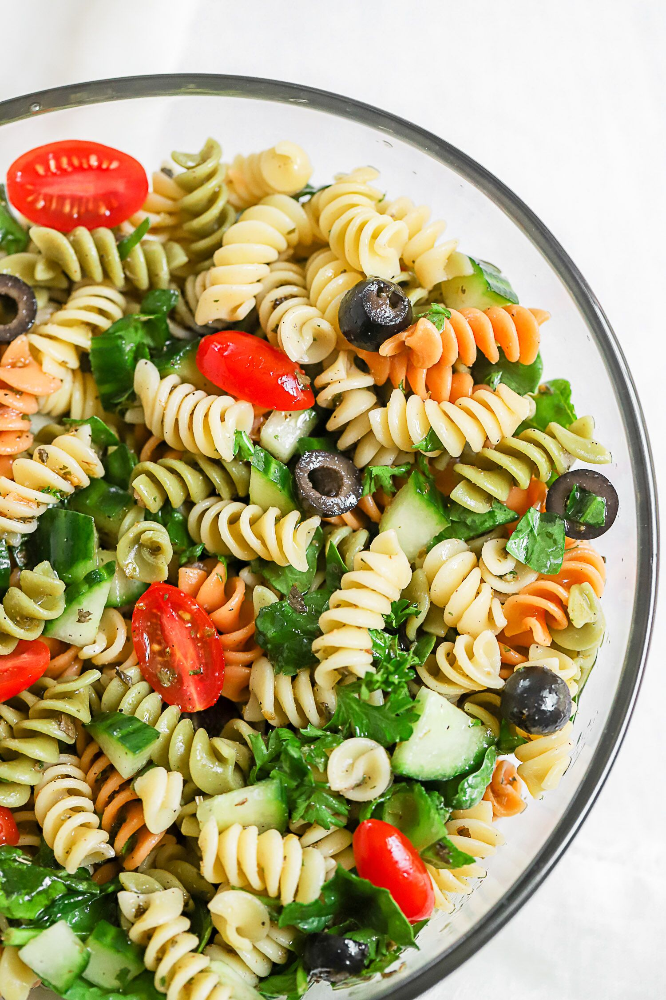

Pasta Salad

Description
A dear friend gave me this recipe many years ago and I've been making it
ever since. It's great for barbecues.
Ingredients
- 1 pound tri-colored spiral pasta
- 6 tablespoons salad seasoning mix
- 1 (16 ounce) bottle Italian-style salad dressing
- 2 cups cherry tomatoes, diced
- 1 green bell pepper, chopped
- 1 red bell pepper, diced
- ½ yellow bell pepper, chopped
- 1 (2.25 ounce) can black olives, chopped
Directions
-
In a large pot of salted boiling water, cook pasta until al dente, rinse
under cold water and drain.
- Whisk together the salad spice mix and Italian dressing.
-
In a salad bowl, combine the pasta, cherry tomatoes, bell peppers and
olives. Pour dressing over salad; toss and refrigerate overnight.
Nutrition Facts
Per Serving: 400 calories; protein 7.9g; carbohydrates
39g; fat 24.8g; cholesterol 2.7mg; sodium 1904.2mg.